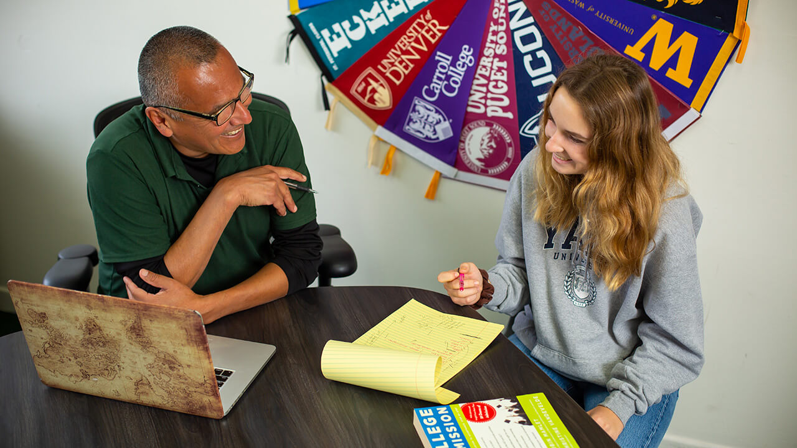

What drives us
Our Mission
ICAN unites the world's most rigorous international college access organizations to amplify their collective impact. We connect talented, low-income students worldwide with life-changing higher education opportunities — equipping member organizations with shared resources, peer learning, and a credible voice in global higher education.
By building a trusted network of ethical, high-performing access programs, we raise the bar for what it means to serve underserved students with integrity and excellence.
Where we're headed
Our Vision
A world where a student's socioeconomic background or geographic location is never a barrier to accessing a world-class university education. We envision a global ecosystem where talent is identified and nurtured regardless of circumstance.
ICAN is the connective tissue of that ecosystem: setting standards, building bridges, and ensuring no extraordinary student is left behind.
What we stand for
Core Objectives
Six commitments that guide everything ICAN and its member organizations do.

Advocate
Amplify the voices and aspirations of underserved students worldwide who possess extraordinary potential but lack access to higher education pathways.

Share Best Practices
Facilitate peer learning among member organizations on student identification, selection, advising, preparation, and ethical engagement with universities.

Coordinate with Universities
Serve as a credible, organized point of engagement for universities recruiting talented, low‑income international students from abroad.

Leverage Collective Scale
Negotiate shared benefits with the College Board, Common App, testing agencies, and service providers on behalf of all member organizations.

Set a Quality Bar
Act as a stamp of approval for the most rigorous, ethical, and effective international access organizations globally.

Strengthen the Ecosystem
Increase transparency, trust, and efficiency in international student recruitment and support across the global higher education landscape.